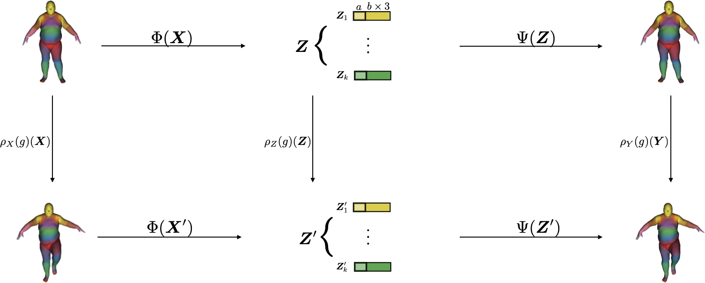

Publications


Multiview Neural Surface Reconstruction by Disentangling Geometry and Appearance
Lior Yariv, Yoni Kasten, Dror Moran, Meirav Galun, Matan Atzmon, Ronen Basri, Yaron Lipman
34th Annual Conference on Neural Information Processing Systems (NeurIPS 2020), spotlight